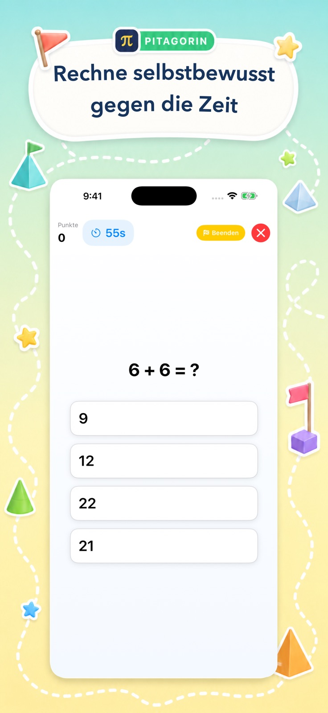
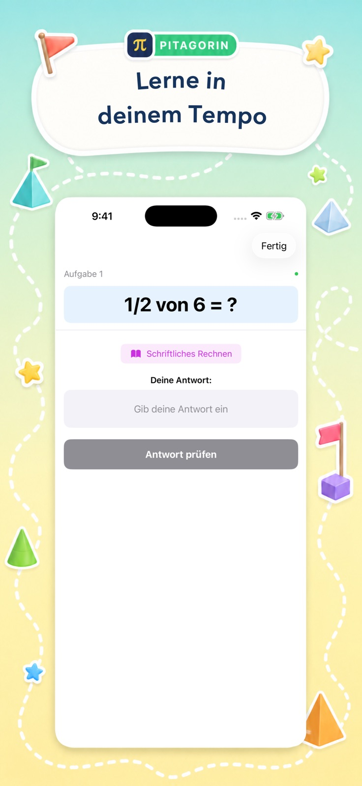
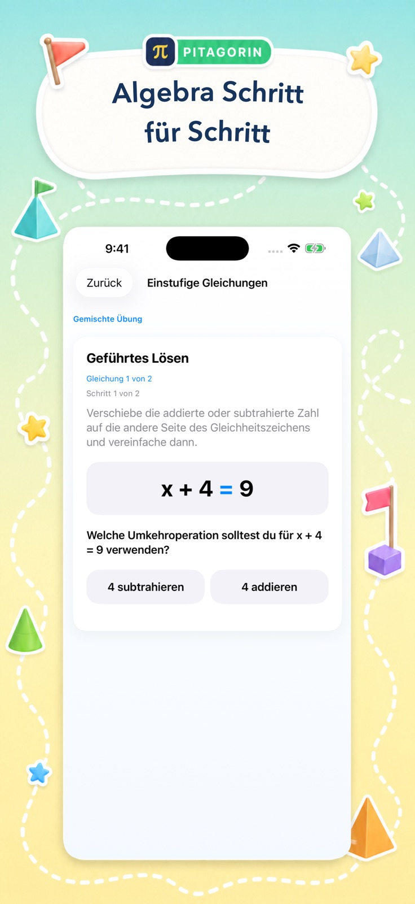

Rechenspiele
Übe Addition, Subtraktion, Multiplikation, Division, Brüche, Dezimalzahlen, Prozente, Potenzen, Wurzeln und mehr in drei Stufen.
In Pitagorin
Wähle ein schnelles Rechenspiel, eine ruhige Erklärung, Einmaleins-Training, eine eigene Prüfung, eine Denkaufgabe oder geführte Algebra.

Wähle deinen Weg
Jede Funktion erfüllt ein anderes Lernbedürfnis. Intensität, Thema und Unterstützung bleiben wählbar.
Übe Addition, Subtraktion, Multiplikation, Division, Brüche, Dezimalzahlen, Prozente, Potenzen, Wurzeln und mehr in drei Stufen.
Arbeite ohne Zeitdruck, gib die Antwort ein und öffne passende visuelle Hilfen.
Lerne die Reihen 1 bis 12. Pitagorin Pro ergänzt Intelligente Wiederholung und Flüssigkeits-Sprint.
Stelle eine Prüfung aus Rechenarten und Schwierigkeit zusammen, speichere das Ergebnis und sieh Erklärungen erneut an.
Erreiche eine Zielzahl oder gleiche beide Seiten einer Gleichung mit Hinweisen und Rückgängig aus.
Folge Grundlagen, Gleichungen, proportionalem Denken, linearen Zusammenhängen, Systemen, Exponenten und Funktionen.
Der Lernkreislauf
Schnelles Feedback hält den Schwung; Erklärungen schaffen echtes Verständnis.


So läuft eine Einheit
Der nächste Schritt bleibt für selbstständige Kinder und zurückkehrende Erwachsene verständlich.
Jetzt üben
Pitagorin ist für iPhone und iPad kostenlos, mit optionalen Pro-Funktionen in der App.